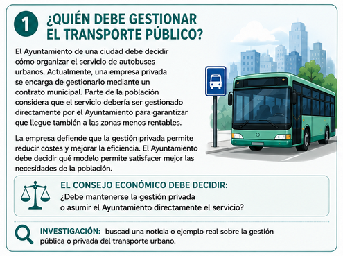
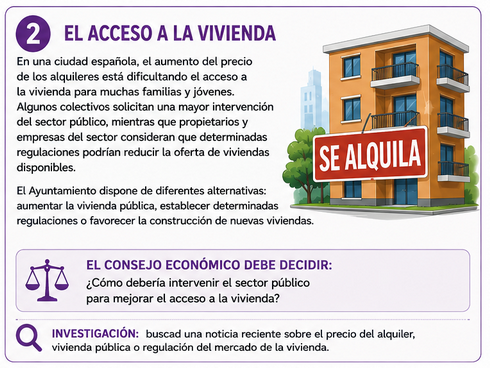
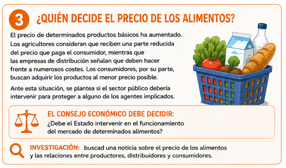
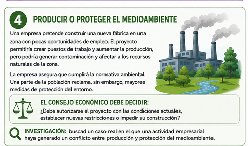
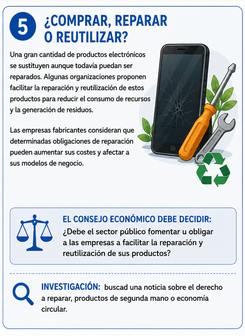
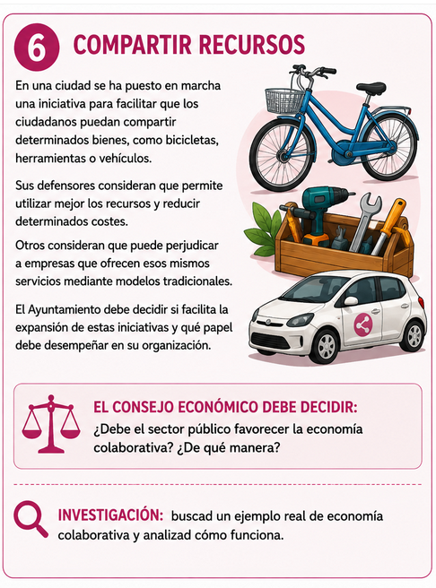

Consejo Económico: tomamos decisiones
|
A lo largo de esta unidad habéis aprendido que las personas, las empresas y el sector público toman decisiones económicas para satisfacer necesidades utilizando recursos que son limitados. Ahora tendremos que poner en práctica todo lo aprendido. Trabajaremos en grupos y cada equipo recibirá un problema social y económico. El reto será analizar la situación, buscar información relacionada y tomar una decisión que después habrá que defender ante el resto de la clase.
|
RETO 1

RETO 2

RETO 3

RETO 4

RETO 5

RETO 6

1. Analizamos la situación
|
2. Investigamos
| Realizad una pequeña búsqueda en Internet para ampliar la información sobre vuestro caso. Buscad una noticia, dato o ejemplo real relacionado con el problema. Además, intentad encontrar una evidencia que apoye vuestra posible propuesta, una información que pueda cuestionarla, utilizando fuentes fiables y anotando las fuentes consultadas. |
3. Tomamos una decisión
| Después de analizar la situación y consultar información, el grupo deberá adoptar una postura. ¿Qué decisión tomaríais vosotros? Podéis elegir una de las alternativas planteadas o proponer una solución diferente. Vuestra decisión deberá estar justificada utilizando al menos tres conceptos económicos trabajados durante la unidad. |
4. Preparamos el Consejo Económico
|
Preparad una breve intervención para defender vuestra propuesta (1-2 min). Deberéis explicar el problema al que os enfrentáis, los agentes, sectores y factores productivos implicados, las alternativas que habéis considerado, la información que habéis encontrado, la decisión que habéis tomado y por qué. También una posible consecuencia negativa de vuestra propuesta y cómo la afrontaríais. Durante el debate, cada grupo presentará su decisión. El resto de la clase podrá formular preguntas y plantear objeciones. Tendréis que responder utilizando argumentos económicos de la unidad. Después de escuchar a los demás grupos, podréis mantener vuesra decisión, modificarla parcialmente o cambiarla. |
En Economía no siempre existe una única solución correcta. Lo importante es argumentar vuestra decisión, utilizar conceptos económicos y valorar sus consecuencias para los diferentes agentes y para el bienestar personal y social. |